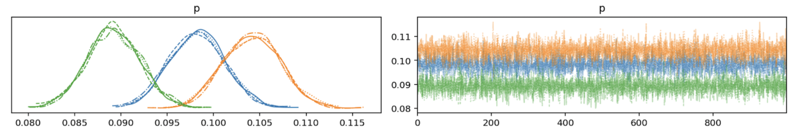

How to massively speed up inference for AB tests
As we've recently written about (here and here) we've enjoyed working with one of HelloFresh's data science teams to enhance their Bayesian Media Mix Modelling.
We seem to have created an impression! Soon after, another of their data science teams contacted us to apply our Bayesian and PyMC skills to their AB testing pipeline.
AB testing is a heavily used approach to work out which of two options (A or B) has a higher probability of resulting in a conversion. A conversion (or more generally a 'success') could be anything from a click, a sign up, or a purchase. Rather than just make decisions by gut feel, companies want to make data-driven decisions. Simple examples include: "Should we make the purchase button red or green?" or "Should we use this product description or that product description?"
AB tests are implemented by randomly exposing customers to the A or B alternatives (or even A, B, C, or A, B, C, D, if you have multiple alternatives) and keeping track of conversions. Over time data on the number of conversions is gathered and we can make inferences about the underlying (but unknown) conversion probability.
This provides an interesting decision making problem - at what point should we decide that the evidence is sufficient to stop testing and proceed with what we think is the best option? We don't want to continue presenting less good options to customers when there is clear evidence that an alternative is superior. While the decision making aspect of AB testing is a crucial component, HelloFresh gave us a different challenge...
A company like HelloFresh runs a large number of concurrent AB or ABC or ABCD test campaigns. Each of these might start at different points in time, and take different durations to gather enough information to make a decision, and we may be interested in tracking the evolution of conversion rates over time. All this adds up to needing to run inference on thousands of tests involving significant compute costs.
Much attention has been paid to Bayesian inference for AB tests, but much less so for ABC and ABCD tests. The HelloFresh data scientists had working implementations, but they were not satisfied - the MCMC sampling efficiency was low, meaning that we are not efficiently translating the compute demands into new knowledge about conversion probabilities. When making many consequential decisions that impact the bottom line, we need faith that our Bayesian inferences are working exactly as intended.
Because of the raw number of tests needing to be run, and the problems with sampling, a typical overnight batch run was taking around 5-6 hours of compute time. This is clearly not scalable: the number of tests needing to be analysed is only going to increase. Speeding this up will future proof this analysis pipeline and could allow for more rapid decision making and feedback.
So I rolled up my sleeves and got to work...
I first went about solving the problems with inference. It makes sense to first establish that the Bayesian model is correct and has efficient sampling before trying to implement speed improvements. And who knows - fixing this may give speed improvements all in one step.
I diagnosed the problems. There was significant correlation in the posterior samples between some of the model parameters, and there was too much autocorrelation in the MCMC chains. After investigation and exploration I proposed a structurally different model with 1 fewer parameter and altered priors. This solved both the inefficient sampling problems and allowed for use of a consistent model for AB, ABC, and ABCD tests. This resulted in intuitively appealing priors for the conversion probabilities based on the domain knowledge from HelloFresh.
This resolved the sampling issues which we can see from the very pleasing MCMC traces (below) as well as from examining parameter correlation and chain autocorrelation (not shown).

I ran parameter recovery simulations to double check that the new models were able to make accurate and meaningful inferences based upon known data. This is a very important step to provide reassurance that the model is working as intended and that we can trust the model's inferences.
So far, I had achieved a 1.2x speed up for AB tests, and about a 2x speed up for ABC and ABCD tests. Not insignificant, but our standards are pretty high at PyMC Labs, so I didn't stop there.
Experimentation showed that the MCMC chains converged after only a handful of steps. So my first experiment was to reduce the number of tuning steps from the default 1000, down to 100. Unfortunately this only offered an approximately 0.1 second speed up in each AB test.
My next experiment was to see how well I could do by avoiding repeated compilation of the same model hundreds or thousands of times. We can do this by defining a PyMC model once and take care to demarcate our data using pm.Data. This allows us to then iterate through the datasets using the same model and simply switching in the new data to that model. But this only gave rise to negligible speed increases, so I kept on going.
The next experiment proved wildly successful and was the solution we ended up using. Rather than iterating through all the datasets, conducting inference many times, I ended up defining one large 'unpooled' model and fit all datasets simultaneously. Unpooled models can be thought of as conducting a whole series of identical inferences in a single model but which are statistically independent. So the AB test was adapted to simultaneously conduct inference over many datasets, each of which are statistically independent.
At the start, HelloFresh's batch AB testing pipeline took around 5-6 hours. Our solution took in total about 5-6 minutes. This was a fantastic outcome which has enabled:
AB testing has received much attention - for example see the PyData talk Successfully applying Bayesian statistics to A/B testing in your business and the blog post A/B testing with probabilistic programming and PyMC3 (part I).
If you are interested in seeing what we at PyMC Labs can do for you, then please email info@pymc-labs.com. We work with companies at a variety of scales and with varying levels of existing modeling capacity. We also run corporate workshop training events and can provide sessions ranging from introduction to Bayes to more advanced topics.